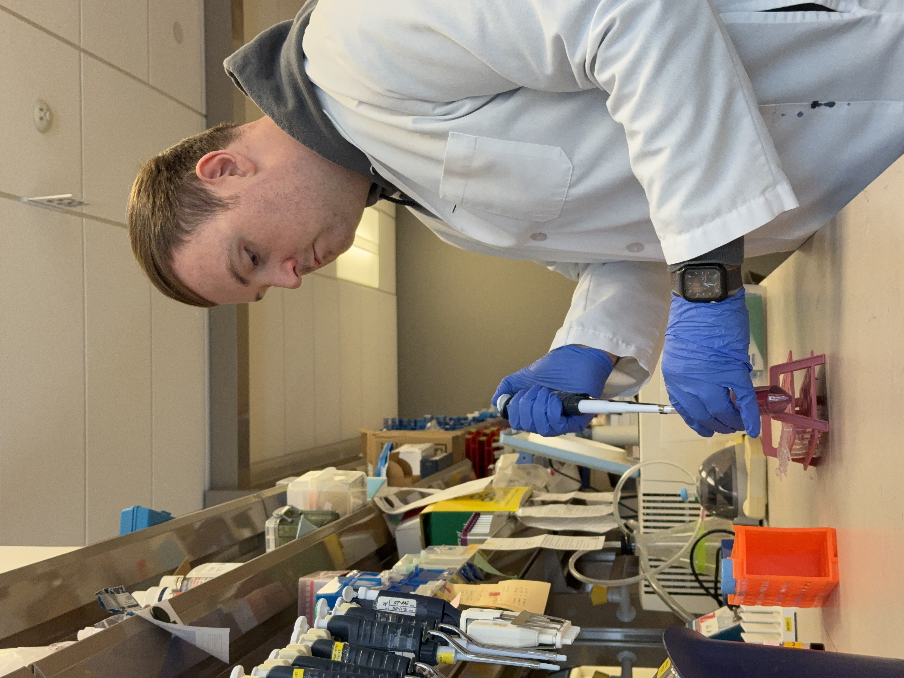

Have you ever wondered why you wake when you do, sleep when you do, or eat when you do? Do you find you concentrate better in the morning? Has your doctor ever told you to take medicine at a certain time of day? We wake, we eat, sleep, and repeat.
We don’t ordinarily question why we do the things we do at specific times of the day. But beneath these patterns lies an exquisite internal orchestration of genes and proteins that we know to be circadian rhythms. These rhythms govern not just our behavior, but the timing of nearly every physiological process in our bodies. These near-24-hour rhythms, embedded in nearly every cell of the body, are critical to our survival and they evolved due to our need to adapt to the solar cycle. At the heart of this system is a master clock located in the suprachiasmatic nucleus (SCN), a tiny cluster of about 20,000 neurons in the hypothalamus. This master clock receives direct input from light-sensing cells in the retina and uses that signal to align our internal time with the external world,specifically, the 24-hour cycle of light and dark. Once synchronized, the SCN sends timing cues throughout the body, coordinating clocks in nearly every organ, including the liver, lungs, heart, and even skin. These cellular clocks run on a feedback loop of gene expression, turning on and off in rhythmic fashion. Together, they keep our bodies running on schedule. Over 20 genes govern this feedback loop, but two are particularly important. These “master clock genes” are called CLOCK and the slightly-less-catchy BMAL1, which I research.
Circadian rhythms aren’t just a human thing, they’re a universal timekeeping system found in everything from people and pets to plants and even tiny microbes. Whether it’s a flower opening at sunrise or bacteria timing their metabolic activity, life on Earth runs on internal clocks. And while the genes behind these rhythms vary, the purpose is the same: staying in sync with the day. The first to really notice and describe circadian rhythms was a French astronomer with a memorable name, Jean-Jacques d’Ortous de Mairan in 1729. He conducted a famous experiment with a mimosa plant (which opens its leaves during the day and closes them at night) and observed that the plant continued its leaf movements even when kept in constant darkness. This showed that the plant had an internal biological clock and that the plant wasn’t just reacting to sunlight. While de Mairan’s experiment was with a plant, not a human, he was the first human to document intrinsic rhythmic behavior tied to time. This laid the foundation for modern chronobiology, the study of biological rhythms. As for human circadian rhythms specifically, it wasn’t until much later, in the 20th century, that researchers like Jürgen Aschoff and Franz Halberg systematically studied and coined terms like “circadian”. Halberg is actually the one who coined the word “circadian” (from Latin circa diem, meaning “about a day”) in the 1950s.
In humans, this internal schedule manifests in countless ways. For example, core body temperature rises in the morning, peaking in the late afternoon before dropping again in preparation for sleep. Our metabolic processes, including how we absorb and store nutrients, are also time-sensitive, with studies showing that eating late at night can lead to greater weight gain and insulin resistance compared to eating earlier in the day, even when calorie intake is identical. Our moods, cognitive performance, and even social behaviors fluctuate with the clock. Studies have shown that reaction time, memory, and attention peak in the late morning to early afternoon, which has implications for everything from school start times to work productivity1. Mental health, too, is intimately tied to circadian function. Individuals with mood disorders such as depression or bipolar disorder often show disrupted circadian rhythms, delayed sleep-wake cycles, irregular daily routines, or altered melatonin and cortisol patterns. Some non-pharmacological interventions, such as light therapy and chronotherapy (timing sleep and light exposure to reset rhythms), work by directly targeting the circadian system. Pharmacological interventions such as lithium also work by influencing the clock, but the mechanisms governing these effects are not fully understood and many patients do not respond to lithium. Until we fully understand these biological mechanisms, we can’t fully exploit their benefits. Maybe the time of day that we take lithium may increase its effectiveness and reduce side effects. Hence, funding basic research in circadian biology is critically important.
Perhaps more surprisingly, our immune system has its own clock. White blood cell counts fluctuate predictably throughout the day, and immune responses to infection vary by time of day. Vaccines have been shown to be more effective when administered in the morning, an insight that could inform public health strategies. Pain perception, too, has a rhythm, with sensitivity often peaking at night, a detail that may help explain why certain chronic pain conditions worsen in the evening.
These rhythms are not merely passive reflections of the day but active drivers of behavior and physiology. When our schedules fall out of sync with our biological clocks, a condition known as circadian misalignment, health consequences follow. Shift workers, for example, are at higher risk for metabolic syndrome, cardiovascular disease, and certain cancers. This is why it is so important to support basic scientific research, especially in a field like chronobiology, which has already uncovered many biological nuances leading to advancements in health care. Research from our lab suggests that men are at more risk than women from conditions linked to circadian misalignment and shift work2. Jet lag, that temporary form of circadian disruption you feel after a long transatlantic flight into a different time zone, demonstrates how we feel the effects of desynchrony. But while jet lag may pass in days, chronic misalignment (from irregular sleep, social jet lag, or late-night lifestyles) can have lasting effects on health and well-being.
Understanding circadian rhythms gives us a new lens through which to view human behavior, not as a series of isolated choices, but as patterns deeply shaped by time. In the same way that gravity quietly shapes the motion of planets, circadian rhythms shape our days, often without our awareness. By aligning our behaviors more closely with these biological rhythms, from sleep and meal timing to exercise and work, we may unlock new ways to promote health, performance, and even happiness. And by supporting the science that reveals these rhythms, we invest in a future where timing becomes not just an afterthought, but a central pillar of medicine and public health.

However, despite its relevance to virtually every aspect of health, circadian biology remains chronically underfunded. Much of what we know about these biological clocks comes from basic science research, long-term, curiosity-driven studies in fruit flies, mice, cells, and even plants that laid the foundation for today’s breakthroughs. To unlock the next generation of therapies and preventive strategies, we need to invest in this kind of fundamental research now. The science of time has never been timelier, and its potential to transform medicine is only just beginning, as seen in advances in chronomedicine.
Circadian medicine or chronomedicine, is the application of our understanding of biological rhythms to improve health. The field of chronomedicine is already beginning to reshape how we think about disease prevention, diagnosis, and treatment. Research has shown that the timing of everything from drug delivery to surgery can influence outcomes. For instance, chemotherapy given at certain times of day can be more effective and less toxic and blood pressure medications may work better when taken at night3. This emerging field asks not just what treatment to give, but when, adding a powerful new layer to personalized medicine.
The foundation of these insights lies in decades of basic circadian research, including several landmark discoveries. The 2017 Nobel Prize in Physiology or Medicine recognized three scientists for uncovering the molecular machinery of the circadian clock, the feedback loop consisting of clock genes like PER, CRY, and BMAL1 that keep time within our cells. These breakthroughs, initially discovered in fruit flies, have since been shown to influence nearly every aspect of physiology in humans. What began as a curiosity about fruit fly behavior has opened the door to a revolution in understanding how timing governs health and disease.
In my research, I have been investigating the role of the clock in metabolism, exercise, and aging. Specifically, my research aims to determine how exercise may be beneficial as we age by influencing circadian rhythms. We investigate mice that genetically lack the clock gene, Bmal1. These mice as a consequence experience accelerated aging, sarcopenia-like muscle physiology (they have low muscle mass and muscle weakness), and poor health span and life span, showing how vitally important clock genes are for health. At our lab, led by Dr Garret A. FitzGerald at the University of Pennsylvania, we also focus on the effects of shiftwork on circadian rhythms and cardiometabolic health in both humans and animal models.
To unlock the next generation of therapies and preventive strategies, we need to invest in fundamental research now. The science of time and the circadian clock is not a niche biological curiosity, it is a foundational pillar of human health and disease. The transformative insights we’ve gained from the lab bench to the clinic, stem directly from decades of investment in basic science. Without sustained and expanded funding, we risk slowing progress at a moment when the potential for medical breakthroughs has never been greater. It has never been timelier to recognize the urgency and promise of chronobiology, which drives innovation in medicine, public health, and beyond.
